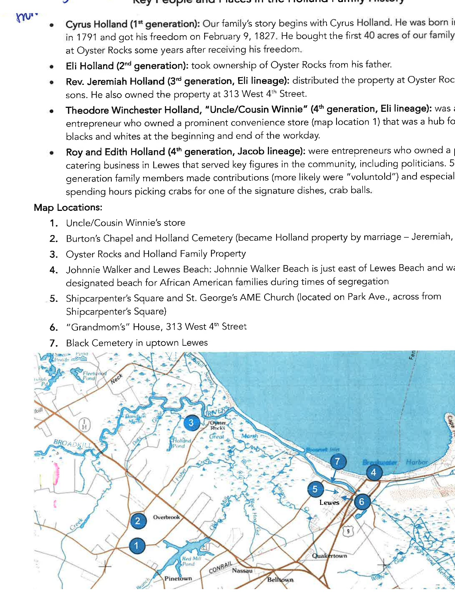

The documented descendants of Cyrus Holland, drawn from the family's own genealogical register — and the key people and places in Lewes that carried his name forward.
This page follows two family documents: a formal genealogical register, "Descendants of Cyrus Holland," and a one-page family summary, "Key People and Places in the Holland Family History," together with its hand-marked map. Names, dates, and burial locations below are transcribed as the family recorded them. Where a birth or death date wasn't recorded, it's left blank rather than guessed at — and a few entries, especially from the 1800s, may never be fully resolved.
A note on names: family sources differ slightly on Cyrus's wife. Wendell F. Holland's written history names her Cotta Burton, which is the name used throughout this page; the genealogical register records her as Cottie (Cotta) Kegiah. Both point to the same person — the family may want to reconcile which surname is correct.
Key People
Key Places

The Register
Cyrus Holland and his wife, and the children who carried the Holland name into the next generation.
Born into slavery; freed February 9, 1827 by Elizabeth Holland. Married Cotta Burton (b. 1800, Sussex County, Delaware — d. 1870). Bought his first 40 acres at Oyster Rocks in December 1845.
Children of Cyrus Holland and Cotta Burton:
The two lines that carry through the rest of this record: Jacob W. Holland's family, and Elzey Eli Holland's family.
Married Cecelia Gumby (b. 1827 — d. 26 Feb 1890).
Married Elizabeth Holland.
Side branches recorded in the register: Hannah Holland Lewis and James Lewis's children — Drucilla, Reba May Lewis Wiltbank, Emma, Cressisus, and James M. Lewis. Cecelia Holland and Alfred Allen's child, recorded only as "Unknown Allen," was born 14 Feb 1882 in Lewes.
Jacob Wright Holland Jr.'s family, and Rev. Jeremiah Holland's family — including Theodore Winchester Holland, "Uncle/Cousin Winnie."
Married Hannah Jane Heavelow (b. 06 Aug 1873, Lewes, DE — d. 31 Jan 1962), daughter of Juber Heavelow and Hannah J. Miller, in 1891.
Married Mary White (d. 25 Dec 1972, Burton's Chapel Cemetery), daughter of Daniel and Saddy White, in 1858.
The great-grandchildren and great-great-grandchildren of Cyrus Holland — including the Riley line connected to the Lewes Historical Society's family history exhibit.
Louis Edward Riley Jr., born 1938, is very likely the same Lewis Riley whose 2022 oral history appears on the Oyster Legacy page — and the family chart on the Lewes Historical Society exhibit banner in the Gallery is titled for him by name.
A portrait in the family archive is hand-labeled "Bernice Holland Moore" — possibly this same Bernice, later married. See it in the Gallery.
Sources: "Descendants of Cyrus Holland" and "Key People and Places in the Holland Family History," both from the family's Family History Notes; cross-referenced with "The Hollands of Oysterrocks" by Hon. Wendell F. Holland. This record isn't exhaustive — later generations and some side branches aren't yet included here.